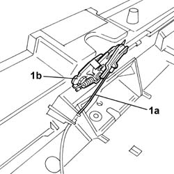
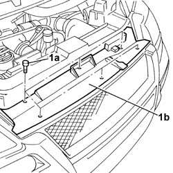
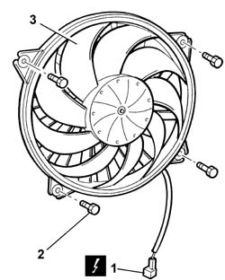

5040A41 A/C CONDENSER FAN - R+R
- Path
- Procedures > 50 AUXILIARY UNITS > 5040 AIR CONDITIONING CASING AND COMPONENTS > 5040A CHECKING OPERATION OF AIR CONDITIONER (TEMPERATURE) > 5040A41 A/C CONDENSER FAN - R+R
- Kind
- repair procedure (removal / refitting; the operation number is the code)
- Applies to
- all engines; all production periods
- Interactive page
- https://sloeber94.github.io/elrnDB-fUlss/en/#/179021659
Applies to: all engines; all production periods
Base
- Carry out
Op. 1016E22 R CYLINDER HEAD - OVERHAUL
Applies to: engines: 2.0 16v; all production periods
 Removing
Removing
 Refitting
RefittingOp. 5530B56 BATTERY DRIP TRAY COVER - R.R.
- Disconnect the negative battery terminal.
1. Release the bonnet release control cable (1) from the bonnet lock (1b).

Applies to: engines: 2.0 16v; all production periods
1. Undo the fixing bolts (1a) and remove the front bumper grille (1b).

Applies to: engines: 2.0 16v; all production periods
1. Disconnect the electrical connection.
2. Undo the retaining bolts.
- Release the wiring from the retainers.
3. Remove the fan.

Applies to: engines: 2.0 16v; all production periods
Refitting
Removing- Position the fan and the wiring.
- Tighten the retaining bolts.
- Connect the electrical connection.
- Fit the front bumper grille and secure it using the bolts.
- Reposition the bonnet release control cable and secure it to the bonnet lock.
- Connect the negative battery terminal.